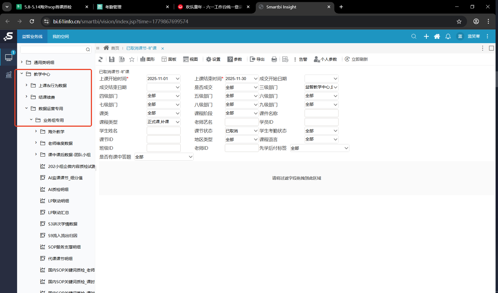
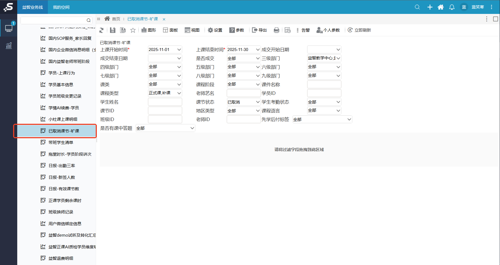

从“想法”到“可展示文件”
- 内部分享不再只停留在口头汇报，已经出现视频、截图、网页、报告、标准文档等可被复用的成果。
- 可视化证据让分享更有说服力，也让团队更容易判断哪些方向值得继续投入。
AI 周会分享 · 2026-05-28 16:30
本周分享重点放在两个层面：一是内部分享会里大家已经做出的可展示产出；二是我这周继续用 Codex 把想法沉淀成文档、工具、规范和可复用流程。核心变化是：AI 不再只是临时帮忙，而是在变成团队资产。
CodexTeddy 机器人将 CRM 红线异常按业务线、语种组、老师、时间和房间号推送到管理群。

AI 通过 CRM 只读老师资源接口，查询英语 S1-S7 每天早 7 点剩余可排教师人数。

BI 整合后，待复核减少 2743 条，把大量“无法判断”转成有业务依据的判断。